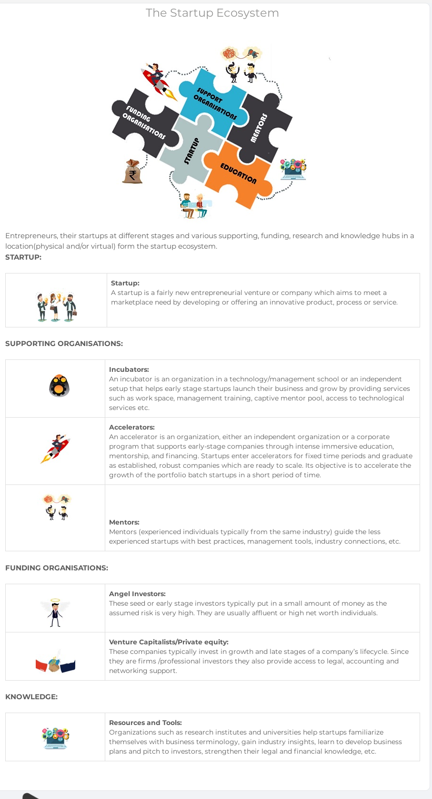

GUIDANCE PAGE


Top News
Revolut lets you purchase gold
The startup has been building a financial hub and already lets you purchase cryptocurrencies and buy public shares. Gold is part of a new feature called Commodities
Deep North raises $25.7M for AI that uses CCTV to build retail analytics
Hopefully, this list will help you and your company stay out of startup purgatory.
YC-backed Legionfarm lets competitive gamers pay to play with pro coaches
YC-backed Giveaway lets folks give away their unused or unnecessary items in a marketplace. Unlike other buy and sell or donation platforms, Giveaway uses a virtual currency on
Top Blogs
Flycatcher - "No day Like Today"
Flycatcher Technologies Start up Story for Startup India - Notes Section
Seeding Agri Innovations - Agriculture Grand Challenge
The Ministry of Agriculture in partnership with Startup India launched the Agriculture Grand Challenge. The ministry identified 12 problem statements
5 lessons to know before partnership firm registration
Business partnerships play a vital role in the success of new ventures. They come with an extra managerial support - a blend of intellectual, monetary capital
Investor Engagement
What do investors look for?
Objective and Problem Solving:
The offering of any startup should be differentiated to solve a unique customer problem or to meet specific customer needs. Ideas or products that are patented show high growth potential for investors.
Market Landscape:
Market size, obtainable market-share, product adoption rate, historical and forecasted market growth rates, macroeconomic drivers for the market your plans to target.
Scalability and Sustainability:
Startups should showcase the potential to scale in the near future, along with a sustainable and stable business plan. They should also consider barriers to entry, imitation costs, growth rate and expansion plans.
Customers & Suppliers:
Clear identification of your buyers and suppliers. Consider customer relationships, stickiness to your product, vendor terms as well as existing vendors.
Competitive Analysis:
A true picture of competition and other players in the market working on similar things should be highlighted. There can never be an apple to apple comparison, but highlighting the service or product offerings of similar players in the industry is important. Consider the number of players in a market, the market share, obtainable share in the near future, product mapping to highlight similarities as well as differences between different competitor offerings.
Sales and Marketing:
No matter how good your product or service maybe, if it does not find any end use, it is no good. Consider things like sales forecast, targeted audiences, product mix, conversion and retention ratio, etc.
Financial Assessment:
A detailed financial business model that showcases cash inflows over the years, investments required, key milestones, break-even points and growth rates. Assumptions used at this stage should be reasonable and clearly mentioned. See sample valuation template here (to be sourced under templates section)
Exit Avenues:
A startup showcasing potential future acquirers or alliance partners becomes a valuable decision parameter for the investor. Initial public offerings, acquisitions, subsequent rounds of funding are all examples of a exit options.
Management and Team:
The passion, experience and skills of the founders as well as the management team to drive the company forward are equally crucial in addition to the all the factors mentioned above.
How do investors benefit from investing in startups ?
Investors realize their return on investment from startups through various means of exit. Ideally, the VC firm and the entrepreneur should discuss the various exit options at the beginning of investment negotiations. A well performing, high-growth startup that also has excellent management and organisational processes is more likely of being exit-ready earlier than other startups. Venture Capital and Private Equity funds must exit all their investments before the end of the fund’s life. The common exit methods are:
Mergers and Acquisitions:
The investor may decide to sell the portfolio company to another company in the market. For example, the $140mn acquisition of RedBus by South African Internet and media giant Naspers and integrating it with its India arm Ibibo group, presented an exit option for its investors- Seedfund, Inventus Capital Partners and Helion Venture Partners.
IPO:
Initial Public Offering is the first time that the stock of a private company is offered to the public. Issued by private companies seeking capital to expand. It is one of the most prefered methods by investors to exit a startup organisation.
Selling shares:
Investors may sell their equity/shares to other venture capital or private equity firms.
Distressed Sale:
Under financially stressed times for a startup company, the investors may decide to sell the business to another company or financial institution.
Buybacks:
Founders of the startup may also buyback their shares from the fund/investors if they have liquid assets to make the purchase and wish to regain control of their company.
A term sheet is a “Non-binding” list of propositions by a venture capital firm at the early stages of a deal. It summarizes the major points of engagements in the deal between the investing firm/investor and the startup. A term sheet for a venture capital transaction in India typically consists of four structural provisions: valuation, investment structure, management structure and finally changes to share capital.
Valuation:
Startup valuation is the total worth of the company as estimated by a professional valuer. There are various methods of valuing a startup company, such as: Cost to Duplicate approach, Market Multiple approach, Discounted cash flow (DCF) analysis and Valuation-by-Stage approach. Investors choose the relevant approach based on the stage of investment and market maturity of the startup.
Investment Structure:
It defines the mode of the venture capital investment in the startup, whether it is through equity, debt or a combination of both.
Management Structure:
The term sheet lays down the management structure of the company which includes a list for the board of directors, and prescribed appointment and removal procedures.
Changes to share capital:
All investors in startups have their own investment timelines, and accordingly they seek flexibility while analyzing exit options through subsequent rounds of funding. The term sheet basically addresses the stakeholders’ rights and obligations with respect to subsequent changes in the company’s share capital.
Investor Engagement

Company registration
Business in india
Starting a Business in india
A business enterprise is an economic institution engaged in the production and/or distribution of goods and services in order to earn profits and acquire wealth.
It includes a large number of activities which may be classified into two broad categories i.e. Industry and Commerce. Every entrepreneur aims at starting a business
and building it into a successful enterprise.
Directorates of Industries
The Directorates of Industries are the nodal agencies in different States which assist and guide new entrepreneurs in starting up an industrial unit in the concerned State. They provide an interface between industry and other agencies for industry inputs and enable the entrepreneur to get different industrial approvals and clearances from various departments at a single point-Single Window.
Financing a Business
Business finance refers to the funds and monetary support required by an entrepreneur for carrying out the various activities relating to his/ her business organization. It is needed at every stage of a business life cycle. Though the amount of the capital needed by an enterprise depends upon the nature and size of the business, but its timely and adequate supply is indispensable for any form of industrial set up (whether small, medium or large). The financial system in India can be categorized into money market and capital market. For regulating the operations of money market, the Reserve Bank of India (RBI) is the supreme authority, whereas the Securities and Exchange Board of India (SEBI) supervises the functioning of the capital market.
Venture Capital
Venture Capital is an important source of finance for those small and medium-sized firms Venture capitalists comprise of professionals of various fields. They provide funds (known as Venture Capital Fund) to these firms after scrutinizing the projects.
Banks:
A bank is an institution that accepts deposits of money from the public, which are repayable on demand and withdrawable by cheque. Such deposits are used for lending to others and not for financing its own business of any kind. The term lending includes both direct lending to borrowers and indirect lending through investment in open market securities.
Government Schemes:
An entrepreneur requires a continuous flow of funds not only for setting up of his/ her business, but also for successful operation as well as regular upgradation/ modernization of the industrial unit. To meet this requirement, the Government (both at the Central and State level) has been undertaking several steps like setting up of banks and financial institutions; formulating various policies and schemes, etc. All such measures are specifically focused towards the promotion and development of small and medium enterprises
Non-Banking Financial Companies:
Non-banking financial companies (NBFCs) are fast emerging as an important segment of Indian financial system. It is an heterogeneous group of institutions (other than commercial and co-operative banks) performing financial intermediation in a variety of ways, like accepting deposits, making loans and advances, leasing, hire purchase, etc. They raise funds from the public, directly or indirectly, and lend them to ultimate spenders.
Financial Institutions:
The Government of India, in order to provide adequate supply of credit to various sectors of the economy, has evolved a well-developed structure of financial institutions in the country. These financial institutions can be broadly categorized into All India institutions and State level institutions, depending upon the geographical coverage of their operations. At the national level, they provide long and medium term loans at reasonable rates of interest.
Legal Considerations for a Business
Legal aspects are an indispensable part of a successful business environment in any country. They reflect the policy framework and the mind-set of the Governmental structure of that country. In India, the most important law which regulates all aspects relating to a company is the Companies Act, 1956. It contains provisions relating to formation of a company, powers and responsibilities of the directors and managers, raising of capital, holding company meetings, maintenance and audit of company accounts, powers of inspection and investigation of company affairs, reconstruction and amalgamation of a company and even winding up of a company.
The Indian Contract Act, 1872, is another legislation which regulates all the transactions of a company. It lays down the general principles relating to the formation and enforceability of contracts; rules governing the provisions of an agreement and offer; the various types of contracts including those of indemnity and guarantee, bailment and pledge and agency. It also contains provisions pertaining to breach of a contract.
The other major legislations are:- the Industries (Development and Regulation) Act 1951; Trade Unions Act; the Competition Act, 2002; the Arbitration and Conciliation Act, 1996; the Foreign Exchange Management Act (FEMA),1999; laws relating to intellectual property rights; as well as laws relating to labour welfare.
Texation of Business in India
India has a well-developed tax structure. The power to levy taxes and duties is distributed among the three tiers of Government, in accordance with the provisions of the Indian Constitution. The main taxes/duties that the Union Government is empowered to levy are:
a) Income Tax (except tax on agricultural income, which the State Governments can levy)
Customs duties, Central Excise and Sales Tax and
Service Tax
Sales Tax (tax on intra-State sale of goods)
Stamp Duty (duty on transfer of property),
State Excise (duty on manufacture of alcohol),
Land Revenue (levy on land used for agricultural/non-agricultural purposes),
Duty on Entertainment and Tax on Professions & Callings.
Innovation and Business
Intellectual Property Rights (IPRs) are crucial for innovation. It is the foundation of any knowledge-based economy. It is the interface of - creations and rights. It provides through all sectors of the economy and is increasingly becoming important for ensuring competitiveness of the enterprise. Role of IPR lay in providing a legal right to the inventor to protect his/her creation as well as preventing others from illegally exploiting the creation and thus avoid re-invention of the wheel.
Copyright:
Copyright: is concerned with protection of creative works that are musical, literary, artistic, lectures, plays, art reproductions, models, photographs, computer software, etc.
Patent:
pertains to pragmatic innovations and aims to protect inventions that are novel, non-obvious and useful.
Trademark:
Trademark: is related to commercial symbols and concern to protect distinctive marks such as words/signs including personal names, letters, numerals, figurative elements (logos); devices; visually perceptible two or three dimensional signs/shapes or their combinations; audible signs (sound marks) e.g. the cry of an animal or laughing sound of a baby; olfactory marks (smell marks), use of certain fragrance.
Industrial Designs:
protects novel nonfunctional features of shape, configuration, pattern, ornamentation or composition of lines or colours, applied to any article either two or three dimensional or in both forms by any industrial process or means whether manual, mechanical or chemical, separate or combined which in the finished article appeal to and are judged solely by the eye.
Geographical Indications (GI):
Geographical Indications (GI): are defined as that aspect of industrial property, which refers to the country or to a place of origin of that product. Typically, such a name conveys an assurance of quality and distinctiveness of the product, which is essentially attributable to the fact of its origin in that defined geographical locality, region or country.
Intellectual Property Rights are always territorial. Globalization and rapid proliferation of technology has elevated the importance of intellectual property rights.
IPR Laws and Regulations
India is a founder member of WTO and has ratified the Agreement on Trade Related Intellectual Property Rights (TRIPS). As per the agreement, all member countries including India are to abide by the mutually negotiated norms and standards within the stipulated timeframe. Accordingly, India has set up an Intellectual Property Right (IPR) regime, which is WTO compatible and is well established at all levels whether statutory, administrative or judicial.
The Government has taken a comprehensive set of initiatives to streamline the intellectual property administration in the country in view of its strategic significance. The Controller General of Patents, Designs and Trade Marks (CGPDTM) under DIPP is nodal authority that administers all matters relating to patents, designs, trademarks and geographical indications and also directs and supervises the functioning of :-
- The Patent Office (including Designs Wing)
- The Patent Information System (PIS)
- The Trade Marks Registry (TMR), and
- The Geographical Indications Registry (GIR)
Besides, a 'Copyright Office' has been set up in the Department of Education of the Ministry of Human Resource Development, to provide all facilities including registration of copyrights and its neighboring rights.
As far as issues relating to layout design of integrated circuits are concerned, 'Department of Information Technology' in the Ministry of Information Technology is the nodal organization. While, 'Protection of Plant Varieties and Farmers' Rights Authority' in Ministry of Agriculture administers all measures and policies relating to plant varieties.
Legislations/Laws governing IPR in India are: -
- The Trade Marks Act, 1999
- The Geographical Indications of Goods (Registration and Protection) Act 1999
- The Designs Act, 2000
- The Patents Act, 1970 and its subsequent amendments in 2002 and 2005
- Indian Copyright Act, 1957 and its amendment Copyright (Amendment) Act, 1999
- Semiconductor Integrated Circuit Layout Design Act, 2000
- Semiconductor Integrated Circuit Layout Design Act, 2000
Trips
Agreement on Trade Related Aspects of Intellectual Property Rights (TRIPS). It for the first time brought laws relating to intellectual property into the international trading system. This agreement narrowed down the differences existing in the extent of protection and enforcement of the Intellectual Property rights (IPRs) around the world by bringing them under a common minimum internationally agreed trade standards. The member countries are required to abide by these standards within stipulated time-frame and promote effective protection of IPRs in order to reduce distortions and impediments to international trade.
Legal consideration for startup
Key terms of Co-Founder's Agreement
A Co-Founder Agreement allows you to set out the equity ownership, initial investments and responsibilities of each Co-Founder. The purpose of the agreement is to make the understanding the co-founders have regarding the functioning of their company and relationship and obligation between co-founders legally binding through a formally written agreement.
The formation of such an agreement requires an open discussion between the partners regarding their apprehensions, fears, outlook, aspirations and all arrangements involving the start up. The objective of the agreement is to minimize the possibility of debilitating surprises in the future when the company is functional in terms of inter co-founder relationship.
Choice of Entity for a Startup - Company,Partnership or Proprietorsh
In India, one can choose from five different types of legal entities to conduct business. These include Sole Proprietorship, Partnership Firm, Limited Liability Partnership, Private Limited Company and Public Limited Company. The choice of the business entity is dependent on various factors such as taxation, owner liability, compliance burden, investment and funding and exit strategy.
Protecting your Startup Brand - Trademark issues
Trademarks are at the crux of any business: from the name of your enterprise to the names of specific products, services and logos- any particular term or design that is unique to your business can be understood as a part of its trademark. These characteristics are key to building your brand identity and carving a unique niche for your business. And so, legally protecting these aspects of your business identity and making sure nobody else misappropriates them is intrinsic to running a successful business.
Getting Angel Investments Termsheets Right
A term sheet, or letter of intent, is a statement of the proposed terms and conditions in connection with a proposed investment. It generally runs about one to five pages in length. In the case of angel investments, the term sheet can be prepared by the start-up or the angels. Most of the terms are non-binding, with the exception of certain confidentiality provisions and, if applicable, exclusivity right
Splitting Equity Between Co-Founders
One of the toughest challenges for founders of a young company is deciding how to split the equity among the founders and early hires. This is especially complex when cofounders are inexperienced or have a friendship as well as business partnership. Putting value on each partner’s role can get personal and it is best done not in one late-night session, but more methodically, over a period of time, and with advice.
Understanding ESOP and Sweat Equity
The start-ups which are in the early stages of their businesses lack the ability to pay competitive and high salaries to their employees which established businesses or large corporations can afford to pay, although the former requires good share of human capital because of them facing resource constraints, and unstable cash flow. Start-ups and other established companies often require motivated employees who can over-perform and exceed their expectations. Therefore, with an aim to retain and incentivise employees, companies come up with rewarding performance bonuses, revenue shares, stock options or a stake in the company.
Legal Mistakes that Hurt Startups
Legal mistakes can be incredibly costly for startups. Some of the mistakes that the Startup make are: -
- Not negotiating a co-founder’s agreement;
- Not starting the business as company;
- Not evaluating regulatory issues in your business;
- Not considering intellectual property related issues;
- Not having a privacy policy and effective terms of use; and
- Not choosing the right legal counsel.
Protecting Intellectual Property in Software
It is essential for every Software Developer/Companies to have a firm grasp of intellectual property rights and how they apply to the Software Industry. Software developers/Companies need a solid understanding of their rights to develop and protect a brand, ensure exclusive ownership of their creations, and keep their work confidential to create and maintain an advantage in this competitive market.
Privacy Policy and Website Terms
Many startups do not recognize that having a privacy policy is mandated by the law if they are collecting sensitive personal information. This video elaborates on the need for a privacy policy and briefly discusses the need for comprehensive website terms, specifically in the context of intermediaries.
Is having too many Angel Investors a bad idea ?
Are you syndicating your angel investment round with ten or fifteen or more investors? Is it a good idea? This video answers the question and suggests how such a round should be structured.
Choosing the right legal Counsel
This video discusses the value of good legal counsel for your startup, and how to identify one